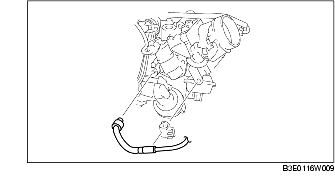

VERWIJDEREN/PLAATSEN MAGNEETKLEP DAMPAFVOER [LF]
B3E011618740W01
1. Verwijder de afdekplaat.
2. Verwijder de accukap. (Zie VERWIJDEREN/PLAATSEN ACCU [LF].)
3. Neem de minkabel van de accu los.
4. Verwijder aan de hand van de volgende procedure:
-
Opmerking
-
• Neem, behalve bij het vervangen van de magneetklep dampafvoer, de brandstofdampslang nooit los van de magneetklep dampafvoer omdat er dan luchtlekkage in het emissiesysteem kan ontstaan. Als de magneetklep dampafvoer toch verwijderd moet worden voor het verwijderen of plaatsen van andere onderdelen, maak de klep dan los bij de snelkoppeling.
-
(1) Neem de brandstofdampslang los aan de zijde van het koolstoffilter. (Zie Aanwijzingen voor plaatsen - brandstofdampslangen.)
-
(2) Trek de vacuümslang uit het inlaatspruitstuk.

5. Plaats de onderdelen in omgekeerde volgorde.
Aanwijzingen voor plaatsen - brandstofdampslangen
1. Plaats de brandstofdampslang en slangklem zoals in de afbeelding is aangegeven.